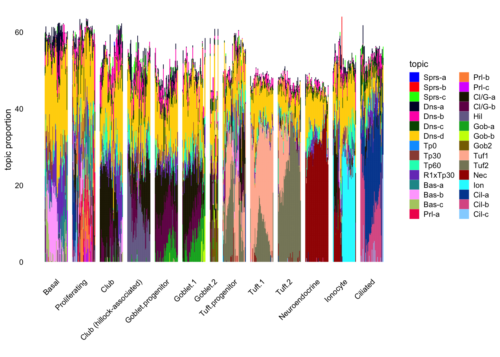
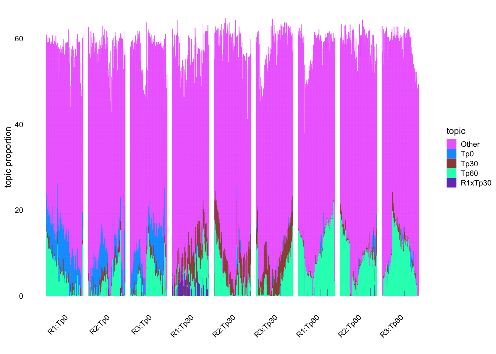
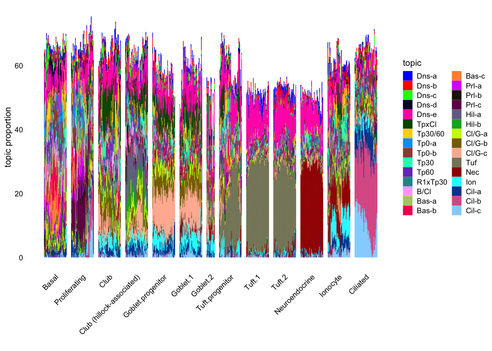
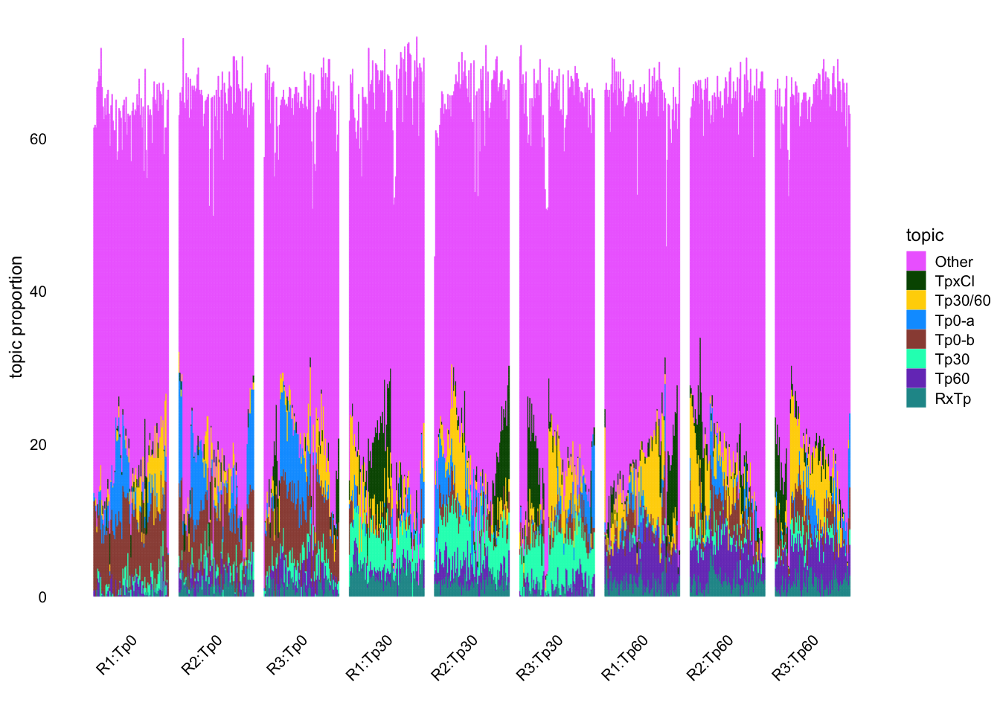
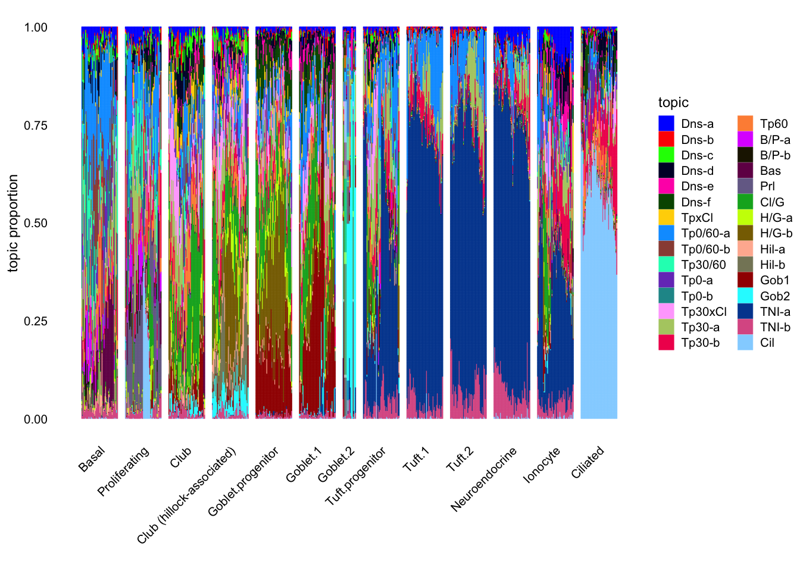
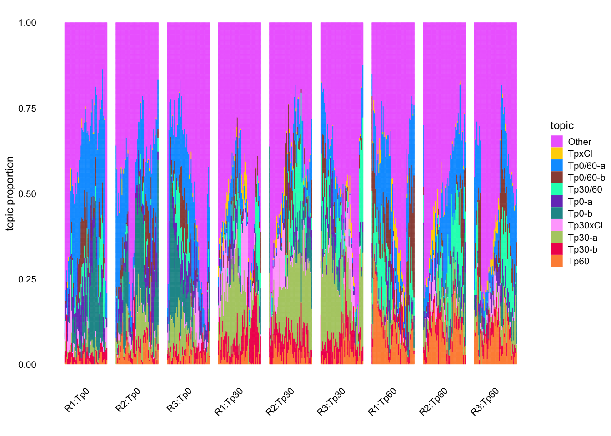

library(tidyverse)Montoro et al. structure plots
Introduction
Here I produce structure plots for EBNMF, NMF, and topic model fits to the larger dataset from Montoro et al.
Load the Tidyverse:
Load the flashier results:
scale_FF <- function(FF, LL, D = 1) {
LL_norms <- apply(LL, 2, function(x) sqrt(sum(x^2)))
return(t(t(FF) * D * LL_norms))
}
ebnmf <- readRDS("../output/montoro-ebmf.rds")
ebnmf_FF <- scale_FF(ebnmf$fit$F.pm, ebnmf$fit$L.pm)Extract cell covariates:
external_info <- tibble(
CellType = sapply(strsplit(rownames(ebnmf_FF), "_"), `[[`, 5),
TimePoint = sapply(strsplit(rownames(ebnmf_FF), "_"), `[[`, 2),
Replicate = sapply(strsplit(rownames(ebnmf_FF), "_"), `[[`, 3),
Fluor = sapply(strsplit(rownames(ebnmf_FF), "_"), `[[`, 4)
) |>
mutate(
CellType = factor(CellType, levels = c(
"Basal",
"Proliferating",
"Club",
"Club (hillock-associated)",
"Goblet.progenitor",
"Goblet.1",
"Goblet.2",
"Tuft.progenitor",
"Tuft.1",
"Tuft.2",
"Neuroendocrine",
"Ionocyte",
"Ciliated"
)),
TimePoint = factor(TimePoint),
Replicate = factor(Replicate),
) |>
mutate(TPxRep = fct_cross(Replicate, TimePoint))I will use the following functions to generate plots:
make_tib <- function(FF, info_col, ksort, ncells = 50) {
info <- external_info[[info_col]]
# Downsample the number of cells.
set.seed(666)
cell_idx <- numeric(0)
for (k in levels(info)) {
which_idx <- which(info == k)
# Downsample common cell types. Duplicate rare ones.
if (ncells < length(which_idx)) {
which_idx <- sample(which_idx, ncells, replace = FALSE)
} else if (ncells >= length(which_idx) * 2) {
which_idx <- rep(which_idx, 2)
}
cell_idx <- c(cell_idx, which_idx)
}
FF <- FF[cell_idx, ]
info <- info[cell_idx]
colnames(FF) <- 1:ncol(FF)
lvls <- as.numeric(ksort)
if (any(setdiff(1:ncol(FF), ksort))) {
lvls <- c("Other", lvls)
}
tib <- as_tibble(FF) |>
mutate(
CellIdx = row_number(),
Info = info
) |>
pivot_longer(
-c(CellIdx, Info),
names_to = "Component",
values_to = "Loading",
values_drop_na = TRUE
) |>
mutate(
Component = ifelse(as.numeric(Component) %in% ksort, Component, "Other")
) |>
group_by(CellIdx, Info, Component) |>
summarize(Loading = sum(Loading), .groups = "drop") |>
mutate(
Component = factor(Component, levels = lvls)
) |>
arrange(Info, Component)
return(tib)
}
do_plot <- function(tib, colors, ntiles = 400) {
struct_df <- tib |>
pivot_wider(names_from = Component, values_from = Loading)
Lmat <- struct_df |>
select(-(1:2)) |>
as.matrix()
group <- struct_df$Info
p <- fastTopics::structure_plot(
Lmat, topics = colnames(Lmat),
grouping = group,
colors = colors,
# embed_method = fastTopics::umap_from_topics,
# dims = 1,
gap = 10,
verbose = FALSE
)
dat <- p$data |>
group_by(sample) |>
arrange(desc(topic)) |>
mutate(top = cumsum(prop), bot = coalesce(lag(top), 0)) |>
ungroup() |>
select(-prop)
res <- max(dat$top) / ntiles
rasterdat <- dat |>
select(sample) |>
crossing(tibble(y = seq(0 + res / 2, max(dat$top) - res / 2, by = res))) |>
inner_join(dat, by = join_by(sample, y > bot, y < top))
p2 <- p
p2$layers[[1]] <- NULL
p2 <- p2 +
geom_tile(aes(x = sample, y = y, fill = topic), data = rasterdat)
return(p2)
}EBNMF
In each case I manually sort and label the factors. Here are all 30 factors for the EBNMF fit, with results grouped by cell type. Note that I’ve down-sampled to only keep a small number of cells for each cell type; in truth basal cells are far and away the most prevalent cell type. (Maybe I should use a wider region for basal/proliferating cells since there is a lot of structure there?)
ebnmf_ksort <- c(
27, 30, 26, # Sparse
8, 10, 16, 1, # Dense
24, 11, 12, 2, # Time points
5, 4, 9, # Basal
21, 23, 17, # Proliferating
3, 15, 7, # 26, Club-Hillock
25, 28, 29, # Goblet
18, 19, 14, 20, # Tuft-NEC-Ionocyte
6, 13, 22 # Ciliated
)
ebnmf_tib <- make_tib(ebnmf_FF, "CellType", ebnmf_ksort)
levels(ebnmf_tib$Component) <- c(
"Sprs-a", "Sprs-b", "Sprs-c",
"Dns-a", "Dns-b", "Dns-c", "Dns-d",
"Tp0", "Tp30", "Tp60", "R1xTp30",
"Bas-a", "Bas-b", "Bas-c",
"Prl-a", "Prl-b", "Prl-c",
"Cl/G-a", "Cl/G-b", "Hil",
"Gob-a", "Gob-b", "Gob2",
"Tuf1", "Tuf2", "Nec", "Ion",
"Cil-a", "Cil-b", "Cil-c"
)
ebnmf_p <- do_plot(ebnmf_tib, fastTopics:::glasbey()[2:31])
ebnmf_p
Next I isolate the factors associated with the “time point” covariate. Note that I’ve down-sampled by replicate:time point here rather than by cell type, so most of the cells shown here are basal or club.
tp_ksort <- c(11, 12, 2, 24)
tp_tib <- make_tib(ebnmf_FF, "TPxRep", tp_ksort, ncells = 75)
levels(tp_tib$Component) <- c(
"Other", "Tp0", "Tp30", "Tp60", "R1xTp30"
)
tp_p <- do_plot(tp_tib, fastTopics:::glasbey()[c(35, 9:12)])
tp_p
NMF
Here are all 30 factors for the vanilla NMF fit (obtained using nnlm):
nnlm <- readRDS("../output/montoro-nmf.rds")
nnlm_FF <- scale_FF(t(nnlm$fit$h), nnlm$fit$w, nnlm$fit$d)
nnlm_ksort <- c(
26, 28, 14, 13, 1, # dense
9, 5, # time points (dense)
11, 3, 8, 7, # time points
21, # replicate x TP
10, # basal/club
2, 6, 4, # basal
12, 19, 24, # prolif
18, 16, # hillock
25, 17, 23, # club/goblet
29, # tuft
27, # NEC
30, # ionocyte
20, 15, 22 # ciliated
)
nnlm_tib <- make_tib(nnlm_FF, "CellType", nnlm_ksort)
levels(nnlm_tib$Component) <- c(
"Dns-a", "Dns-b", "Dns-c", "Dns-d", "Dns-e",
"TpxCl", "Tp30/60",
"Tp0-a", "Tp0-b", "Tp30", "Tp60",
"R1xTp30",
"B/Cl",
"Bas-a", "Bas-b", "Bas-c",
"Prl-a", "Prl-b", "Prl-c",
"Hil-a", "Hil-b",
"Cl/G-a", "Cl/G-b", "Cl/G-c",
"Tuf",
"Nec",
"Ion",
"Cil-a", "Cil-b", "Cil-c"
)
nnlm_p <- do_plot(nnlm_tib, fastTopics:::glasbey()[2:31])
nnlm_p
And here are the time point factors for the NMF fit:
nnlm_tp_ksort <- c(
9, 5, # time points (dense)
11, 3, 8, 7, # time points
21 # replicate x TP
)
nnlm_tp_tib <- make_tib(nnlm_FF, "TPxRep", nnlm_tp_ksort, ncells = 75)
levels(nnlm_tp_tib$Component) <- c(
"Other",
"TpxCl", "Tp30/60",
"Tp0-a", "Tp0-b", "Tp30", "Tp60",
"RxTp"
)
nnlm_tp_p <- do_plot(nnlm_tp_tib, fastTopics:::glasbey()[c(35, 7:13)])
nnlm_tp_p
Topic model
The topic model using all 30 factors:
tm <- readRDS("../output/montoro-topics.rds")
tm_fit <- tm$fit
tm_fit$F <- tm$fit$L
tm_fit$L <- tm$fit$F
tm_fit$Fn <- tm$fit$Ln
tm_fit$Ln <- tm$fit$Fn
tm_fit$Fy <- tm$fit$Ly
tm_fit$Ly <- tm$fit$Fy
tm_fit <- fastTopics::poisson2multinom(tm_fit)
tm_FF <- tm_fit$L
tm_all_ksort <- c(
11, 27, 17,
21, 18, 22, # Weird denser factors
19, # Tp30/60xCl
15, 8, # Tp0/60?
24, # Tp30/60
26, 14, # Tp0
23, 29, 9, # Tp30 - 23 also club
13, # Tp60
10, 4, # Basal/Prolif
12, # Basal
6, # Proliferating
3, # Club/Goblet
28, 16, # Hillock/Goblet-progenitor
5, 20, # Hillock
7, # Goblet-p/1
2, # Goblet-2
1, 30, # Tuft-NEC-Ion
25 # Ciliated
)
tm_tib <- make_tib(tm_FF, "CellType", tm_all_ksort)
levels(tm_tib$Component) <- c(
"Dns-a", "Dns-b", "Dns-c",
"Dns-d", "Dns-e", "Dns-f",
"TpxCl",
"Tp0/60-a", "Tp0/60-b",
"Tp30/60",
"Tp0-a", "Tp0-b",
"Tp30xCl", "Tp30-a", "Tp30-b",
"Tp60",
"B/P-a", "B/P-b",
"Bas", "Prl",
"Cl/G",
"H/G-a", "H/G-b", "Hil-a", "Hil-b",
"Gob1", "Gob2",
"TNI-a", "TNI-b", "Cil"
)
tm_p <- do_plot(tm_tib, fastTopics:::glasbey()[2:31])
tm_p
Time point factors:
tm_tp_ksort <- c(
19, # Tp30/60xCl
15, 8, # Tp0/60?
24, # Tp30/60
26, 14, # Tp0
23, 29, 9, # Tp30
13 # Tp60
)
tm_tp_tib <- make_tib(tm_FF, "TPxRep", tm_tp_ksort)
levels(tm_tp_tib$Component) <- c(
"Other",
"TpxCl",
"Tp0/60-a", "Tp0/60-b",
"Tp30/60",
"Tp0-a", "Tp0-b",
"Tp30xCl", "Tp30-a", "Tp30-b",
"Tp60"
)
tm_tp_p <- do_plot(tm_tp_tib, fastTopics:::glasbey()[c(35, 8:17)])
tm_tp_p
All 30-factor structure plots
For ease of comparison I reproduce all three 30-factor structure plots here.
ebnmf_pnnlm_ptm_pAll time-point factor structure plots
Here I reproduce all three time-point factor structure plots.
tp_pnnlm_tp_p
tm_tp_p